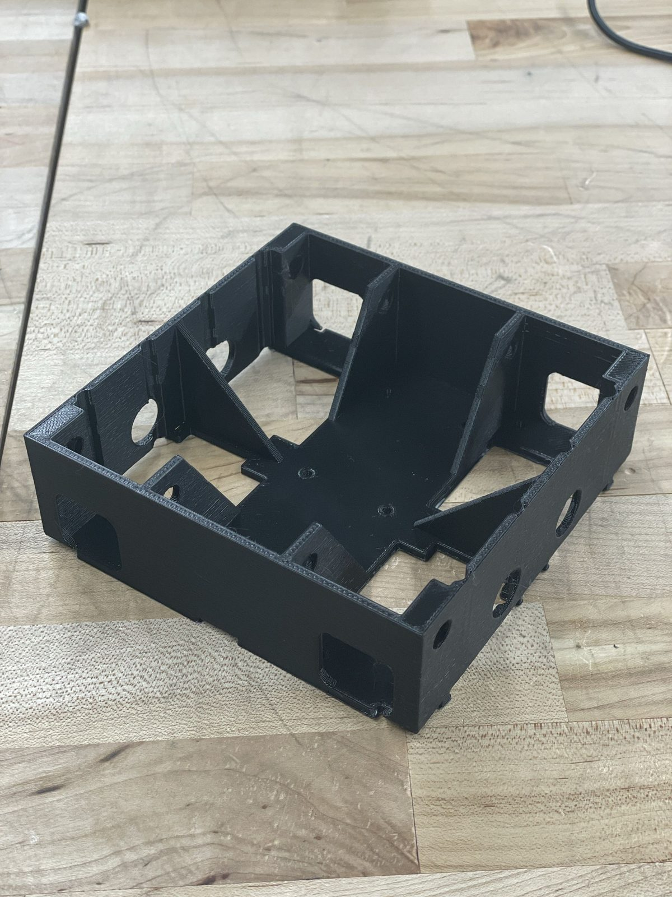
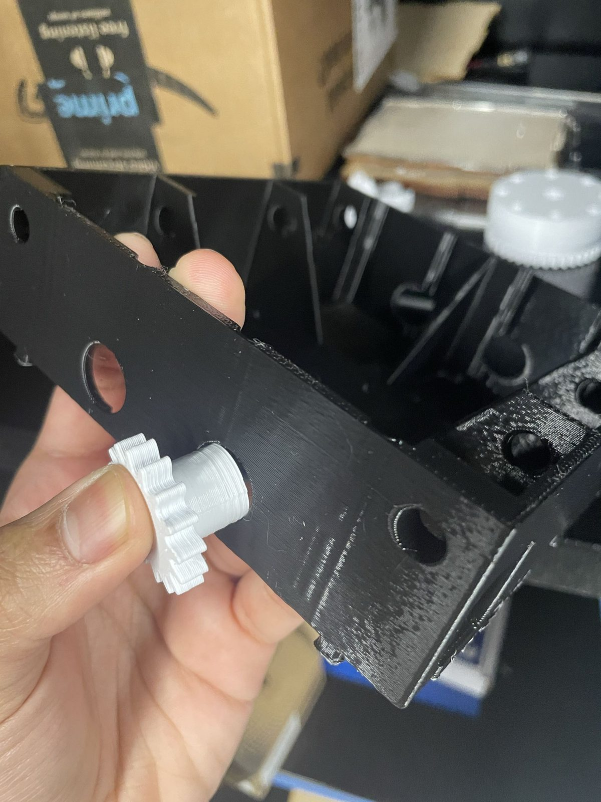
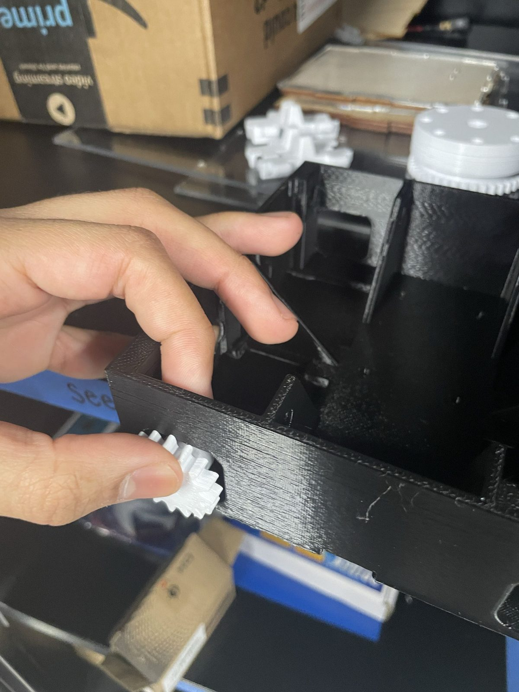

SEED-E: Autonomous Seed-Planting Robot
Arduino and C++ | Team project
Team Project | ENES100 | University of Maryland
For ENES100, my team designed and built SEED-E, an autonomous seed-planting robot capable of navigating its environment and performing mechanical tasks.
I contributed to the mechanical design, microcontroller communication, and autonomous navigation systems.

Design Process
Our first challenge was figuring out how to collect rocks and plant seeds deep within a substrate.
- Brainstorming: We studied robots from previous classes for inspiration. As my teammates proposed ideas, I sketched different mechanisms, including an auger, claw, and waterwheel.
- System Design: We considered how each mechanism would store seeds, dig into the substrate, move loose material, and collect rocks.
- Final Selection: We chose the waterwheel because it addressed multiple requirements while remaining simple enough to implement with a single motor.
- Fabrication: We built the waterwheel using a 3D-printed housing and paddles, with a wooden dowel as its axle. Controlled rotation allowed the mechanism to dig, plant seeds, and hold collected material.

This process taught me how to evaluate design trade-offs and develop a mechanism that could accomplish multiple tasks without unnecessary complexity.
Build photos
A few steps from printing components to fitting the drive mechanism.


Technical Challenges
1. Troubleshooting Wireless Communication
- Problem: Our robot relied on wireless communication to receive coordinates from an overhead camera system. However, eight Wi-Fi modules failed to connect using our Arduino Mega.
- Solution: We tested an Arduino Uno, which successfully connected. We used the Uno to receive wireless data and pass it to the Mega.
- My Contribution: A teammate designed the communication protocol, and I adapted our existing code to use the data transferred between the two boards.
What I learned: How to work around hardware limitations and integrate new components into an existing system.
2. Redesigning Maze Navigation
- Problem: Our original maze-navigation algorithm relied on ultrasonic sensors and wall-following, but failed to navigate the maze reliably.
- Solution: I proposed using the robot's position from the overhead navigation system to guide its movement.
- Implementation: Depending on whether the robot was near the top or bottom of the maze, it would choose different turning directions and check for obstacles before proceeding.
- Result: The new approach worked, allowing the robot to navigate the maze and reach its goal.
What I learned: The importance of reconsidering an algorithm when its initial assumptions don't work in practice.
Outcome and Reflections
Our team successfully built the waterwheel mechanism, integrated the new communication setup, and implemented a navigation strategy that allowed the robot to reach its goal.
This project strengthened my experience with embedded programming, mechanical design, debugging, and collaborative problem-solving. I learned how to evaluate competing designs, adapt to hardware challenges, and develop practical solutions as part of a team.